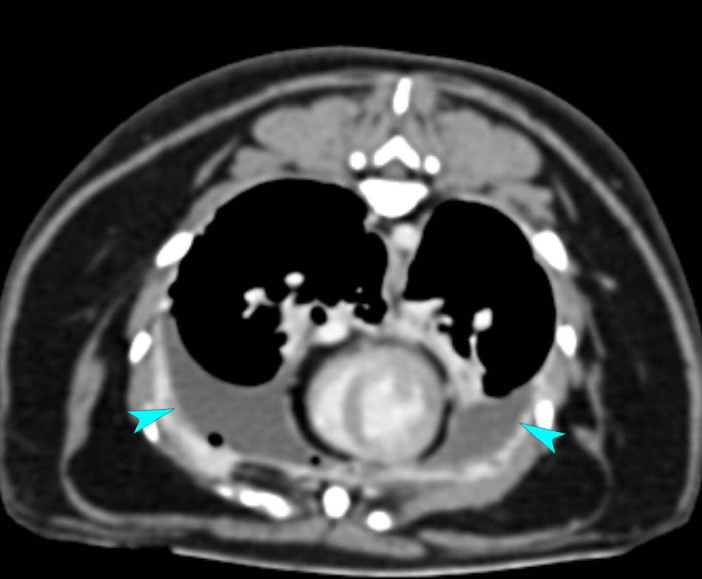
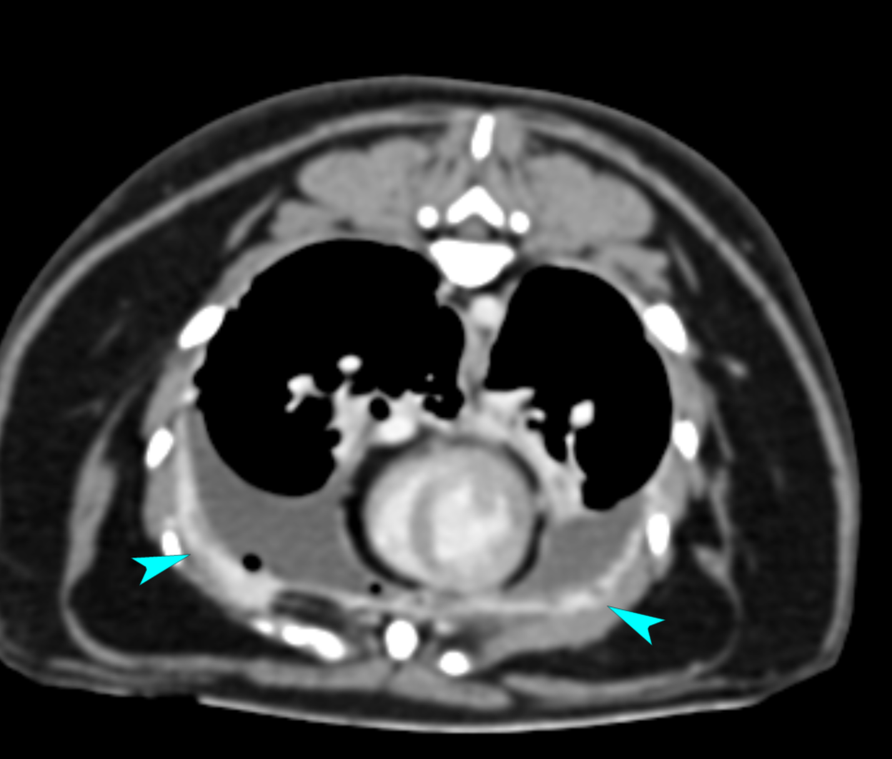
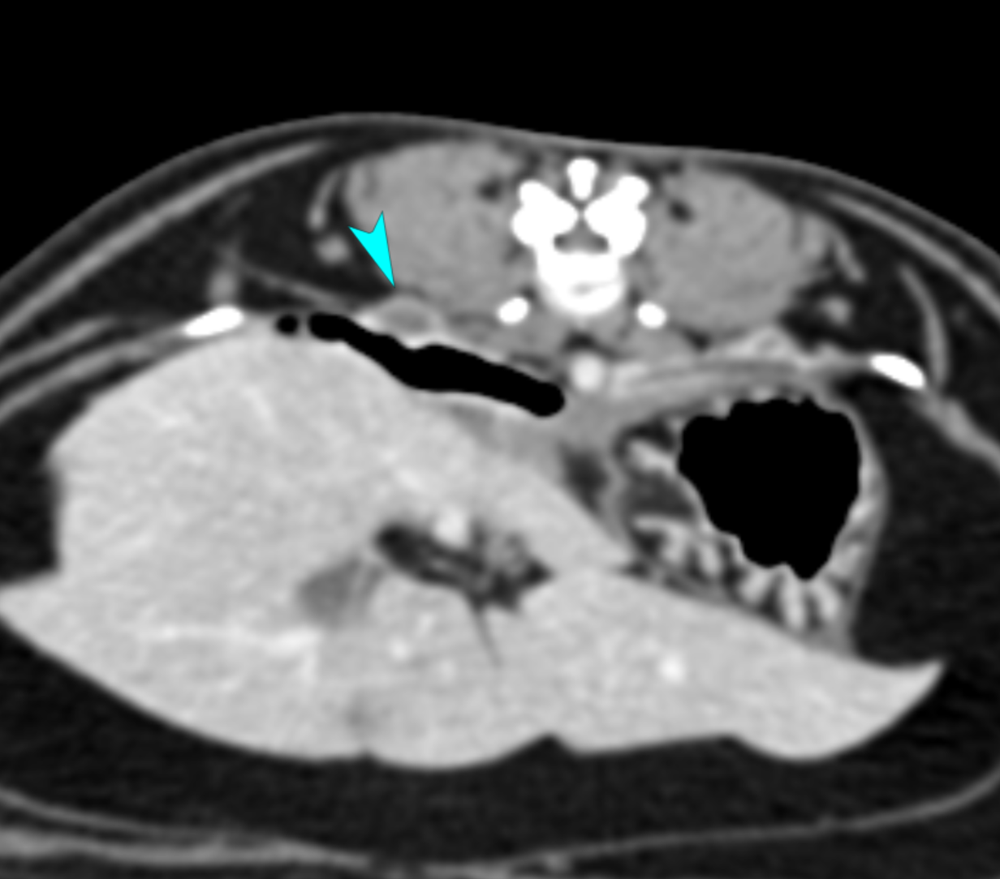
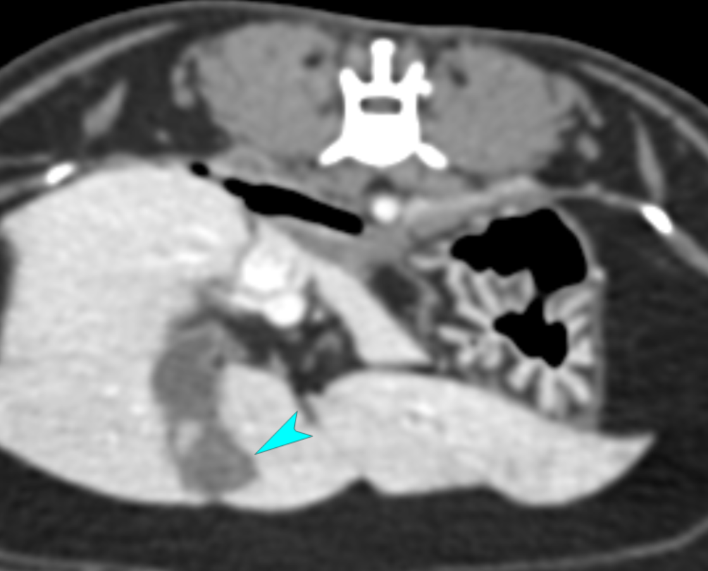

弟弟 的電腦斷層(CT)互動報告
報告日期: 2025/06/18
此份AI整理報告僅供參考，所有醫療決策請務必以獸醫師的原始報告及醫囑為準。
核心發現與健康警示
⚠️
胸腔問題
雙側胸膜腔有少量液體，胸膜彌漫性增厚並顯影，伴隨多個顯影結節。右側胸膜腔內有少量氣體。雙側胸骨、前縱膈、後縱膈淋巴結腫大。
🩺
腹腔發現
肝臟有界限不清的顯影結節。膽囊壁增厚，有低衰減邊緣。脾臟邊緣平滑，顯影均質。胰臟左葉邊緣不規則，胰體部局部輕度增厚。右結腸淋巴結腫大。腹膜和後腹膜腔內有少量液體。
✅
初步診斷與建議
胸腔問題考慮腫瘤或肉芽腫。腹腔肝臟結節考慮結節性增生、肉芽腫或腫瘤。建議對結節進行細針穿刺採樣以進一步評估疾病。
系統詳情
點擊下方按鈕，探索各個系統的詳細發現、獸醫的分析與建議。
關鍵影像
以下是報告中提及的關鍵影像，幫助您視覺化理解報告內容。

圖1: 雙側胸膜腔積液
造影後第三次掃描的橫切面影像。雙側胸膜腔有少量不顯影的液體，導致肺葉從胸腔壁退縮。

圖2: 胸膜增厚
造影後第三次掃描的橫切面影像。胸膜瀰漫性增厚並顯影，邊緣不規則，直徑達3.7 mm。

圖3: 胸膜顯影結節
造影後第三次掃描的橫切面影像。沿著胸膜可見許多顯影結節，右側後端較多，最大尺寸為9.5mm×5.6 mm。

圖4: 膽囊壁增厚
造影後第二次掃描的橫切面影像。膽囊壁增厚，有低衰減邊緣。
行動計畫與追蹤建議
這裡是獸醫師根據影像發現建議的後續步驟，幫助您規劃未來的醫療照護。
| 系統/部位 | 主要發現/問題 | 建議行動 | 優先級 |
|---|---|---|---|
| 胸膜 | 雙側胸膜結節與瀰漫性胸膜增厚 | 建議對結節與增厚區域進行細針穿刺採樣以進行細胞學評估，幫助區別腫瘤或肉芽腫性發炎等病因。 | 高 |
| 膽囊 | 膽囊壁水腫與膽囊炎 | 建議進行膽囊穿刺採樣膽汁，以進行細胞學檢查與細菌培養。 | 高 |
| 淋巴結 | 多處淋巴結腫大 (胸骨、縱膈、右結腸) | 淋巴結腫大可能為感染/發炎導致的反應性，或腫瘤轉移。建議整合其他採樣結果綜合判斷，或與醫師討論是否需進一步採樣。 | 中 |
| 結節 | 左肝結節、左後腹膜結節 | 可能為良性增生、肉芽腫或腫瘤。建議整合其他檢查結果判斷，或於未來定期影像追蹤，評估結節大小變化。 | 中 |
| 下呼吸道與肺臟 | 肺部塌陷與疑似支氣管內物質 | 可能繼發于胸水壓迫、麻醉或下呼吸道疾病。建議臨床監控呼吸狀況，並可能在胸水移除後改善。 | 中 |
AI對話淺聊弟弟電腦斷層報告
您可以聆聽AI形成的podcast對話討論，也可以使用下方的按鈕調整播放速度。